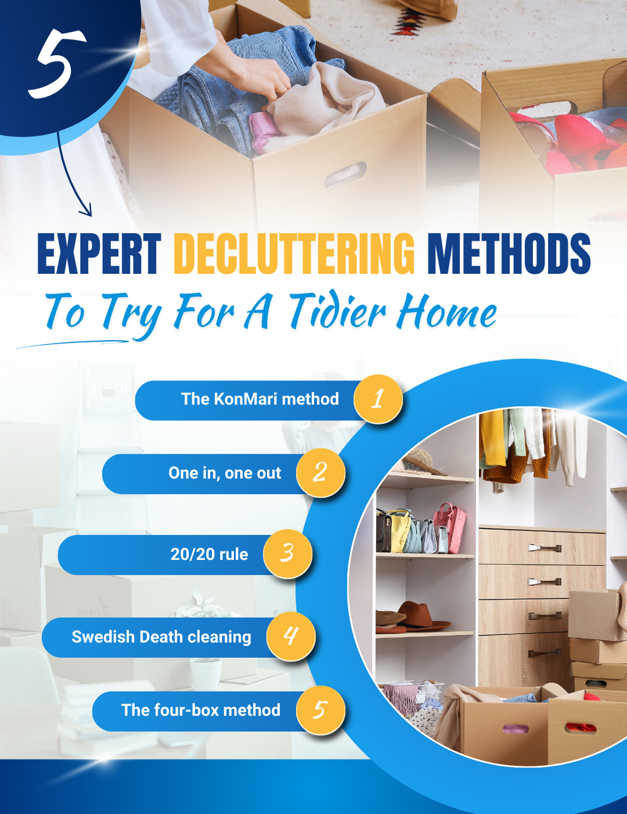

For many, the start of the year is a wonderful opportunity to refresh their living spaces. Aside from cleaning your home, tidying and decluttering might also be at the top of your list.
Decluttering, albeit a daunting task, can be very rewarding. Letting go of items you no longer need or no longer serve their purpose frees up space in your home and your mind, leaving you feeling lighter and happier.

If you feel like decluttering is such a chore, it might be because you haven't found a method that works well for you. Understand that there isn’t a “one-size-fits-all” decluttering solution. Tidying up your space will always depend on your time, energy, or interest, so you don’t have to follow only one rule. Here we’ve rounded up five of the most popular and expert decluttering approaches to owning less, hopefully to make the task a little easier for you.
Whether you want to experiment with these methods to see what works best for you, or you already have a favorite approach but want to try a new one, the results will remain the same: your remaining items will have more meaning and you’ll also have the chance to help others when you donate the ones you no longer need.
What is the KonMari Method™?
The KonMari Method™ is probably one of the most famous decluttering methods, introduced by Japanese organizing consultant Marie Kondo in her 2014 bestselling book “The Life-Changing Magic of Tidying Up.” She also starred in her own Netflix show, “Tidying Up With Marie Kondo.”
The core principle of the KonMari method is simple — choosing what sparks joy. Instead of choosing what to discard, you are choosing to keep only the items that speak to your heart. Kondo recommends tidying by category and not by location, starting with clothes, then moving on to books, papers, komono (miscellaneous items), and, finally, sentimental items. To get started, collect every single item you own in a particular category and put them in a big pile. Gather all your clothes, for example, and then start the process of deciding what to keep. As you go through your belongings, Kondo suggests that you thank your items for their service before throwing or donating them.
This method is also an effective way to make a lot of progress decluttering in specific categories across multiple areas of the house at once.
Who is it for?
People who love mindfulness and intentional living can greatly identify with this approach.
Any drawbacks?
The KonMari method can be time-consuming since you will be sorting through your entire stuff instead of focusing on a particular room or space. Additionally, this is not entirely a minimalist method as it can also encourage hoarders and pack rats to continue keeping things they don't need, just because they think these items still spark joy in their lives.
What is the one-in, one-out technique?
This simple rule means that in each category, you can't add another item until you remove or donate one you already have. This can apply to books, clothes, shoes, sets of glassware, cutlery, and kitchen tools, among others. If you follow this method properly, you’ll never accumulate more than you should and can keep the volume of your belongings constant.
Who is it for?
Perfect for impulsive buyers, especially those who always love to shop for clothes and other personal items. Keeping this in mind can help you avoid unnecessary purchases and teach you how to be less materialistic. Before buying an item, it will make you stop and think first: “Do I really need this item?” “Do I have a similar item that serves the same purpose?” “Is there something I am willing to let go of in return?”
Homeowners who want to try a strict approach this year can follow this one, especially if you’ve just finished decluttering or are in the process of it.
Any drawbacks?
Things can get out of hand when you use this rule as an excuse to purchase new items and bring more things into your home. If you continue to buy and just tell yourself that you’ll get rid of something in its place, it can eventually lead to a never-ending cycle of buying and decluttering.
What is the 20/20 rule?
This rule is simple: If you are unsure about an item but it costs under $20 and could be replaced within 20 minutes, you can declutter it.
Who is it for?
For those who need a low-commitment push to get started on their decluttering journey, especially if they have a nice pile of things that haven't been used for months or years.
Perfect for those “I-could-use-it-one-day” or “just in case” items, such as when purging your kitchen or junk drawers
Any drawbacks?
You may not be able to apply this tactic to a lot of sentimental items, since if they are really sentimental, then they can’t be replaced for less than $20 in 20 minutes.
What is the Swedish Death Cleaning method?
While this decluttering idea sounds morbid, the intention is important and meaningful. Swedish Death Cleaning was first introduced by Margareta Magnusson in her book _Dostadning:_ The Gentle Art of Swedish Death Cleaning. _Dostadning_, or the art of death cleaning, is a Swedish phenomenon by which the elderly and their families set their affairs in order.
This method of decluttering is designed for those later in life and involves removing all non-essential items to ease the process for your loved ones once you've passed on. It’s a wide-scale method to declutter your home, with suggestions that include dealing with larger items then moving down to smaller items (junk drawer, wardrobe), and then saving sentimental things for last. It allows you to keep the more precious items since you might decide to give them away to the special people in your life. Fans of this method see it as a gift to your loved ones, especially if you don’t want to end up leaving your mess for them to deal with for months or even years.
Who is it for?
While the original intention is for the elderly or those who are in their later years of life, Magnusson points out that people of any age can use Swedish Death Cleaning to help them declutter and organize. This is especially true when you realize that you can hardly close your drawers or cabinets.
Any drawbacks?
It’s worth noting that the Swedish Death Cleaning is designed to be slow, so expect that it can be a long and thorough process.
What is the four-box method?
As the name suggests, all you need here are four empty boxes that you will label with their purpose. While there are some variations, most experts include the following: keep, trash or throw away, donate, and sell. Other variations also include ‘rehome' and ‘undecided.’
This is quite an easy, straightforward, and flexible way to deal with your clutter as you can do it for however long and whatever frequency you prefer. You can also use the ‘Undecided’ box if you are still unsure about any particular item. If you have several family members, they can have their boxes and even have them customized to the categories they need.
Who is it for?
Highly recommended for those who are just starting their decluttering journey because of its simplicity and effectiveness.
Those who are decluttering small, dedicated spaces can also benefit from this method.
Go for this if you like putting things in fixed categories.
Any drawbacks?
While this strategy is pretty straightforward, the problem comes when you become indecisive on a lot of items and everything ends up in the ‘undecided’ box. If you don’t have the time or confidence to address them later, you might end up with piles of miscellaneous items that will either just stay in the box or clutter up other areas of your home. The key is to follow through with what you’re supposed to do with your stuff according to the category they fall under. Also, you may need a little guidance when it comes to deciding on things that fall into one or more categories.